Model Traces - Analyze Run-level Performance¶
The Model Traces feature offers a comprehensive view of model performance across runs, enabling tracking of request-level data and key metrics. With features for filtering, searching, and exporting data, it supports precise analysis and troubleshooting, ensuring optimal performance and efficient resource usage. These insights help proactively address issues, supporting informed decision-making and streamlined operations.
Benefits¶
Monitoring open-source, fine-tuned, commercial, or custom API models offers the following benefits:
- Detailed Analysis: Model Tracing allows an in-depth analysis of the model’s performance across all handled requests, enabling review of inputs, generated outputs, and associated run-based metadata.
- Optimization: Regular monitoring helps track key metrics like total requests, failure rates, response times, input, output, and credit consumption to ensure optimal model performance over time.
- Cost Management: Monitoring total requests and consumed credits (Host Credits) enables analysis of failure trends, consumption spikes, and alignment with expected outcomes, providing improved cost visibility and control.
- Scalability: Usage data from monitored runs reveals performance patterns for improved model scalability.
- Compliance and Security: Tracking models across multiple requests helps ensure that input and output data handling is secure, ethical, and regulated.
- Troubleshooting and Maintenance: Tracking errors and failures across runs using request metadata and JSON code helps identify and troubleshoot issues, inefficiency, and interruptions.
Key Features¶
- Column Filters enable you to view specific records by setting a column value or combining multiple filters using AND/OR operators. Learn more.
- Time-based filters provide a comprehensive view of the selected model's performance across runs for a specific past date or date range. Learn more.
- Search lets you look up a specific run(s) of a model using the Request ID and other String type column values.
- Hovering over specific metrics displays a tooltip that provides additional information about the metric's purpose and significance.
- When selecting a date range filter, you can obtain hourly performance analysis for a model on a specific day or review daily performance trends.
- Click the Visibility Filter icon shown below to add or remove the selected column(s) from the table view of records. Turn on the toggle to add a column and turn it off to remove it.
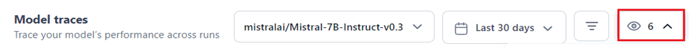
-
Successful requests are marked with a green check icon, while failed requests are marked with a red alert icon.
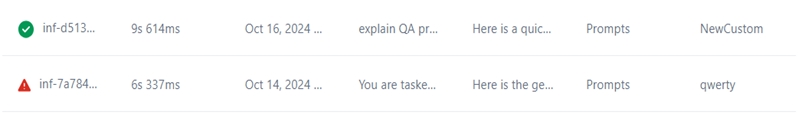
-
Export the model traces dataset for your model into a CSV file for further analysis, editing, and debugging.
- The Metrics Summary showcases the key performance metrics of the selected model across all executed runs. Learn more.
- The table view summarizes key metadata for successful and failed runs of the selected model, offering quick insights and the ability to monitor run-specific response times, analyze input and output, view failed runs in detail, and verify whether credit consumption aligns with usage.
-
Click the Sort filter in the Executed on column to view the data in ascending or descending order by execution date.
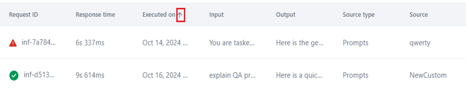
-
Click on each model traces record in the table to view the input, output, and key metadata. Learn more.
{kind=link}
{kind=link}
{kind=link}
Best Practices¶
- Track the Total Requests versus Hosting Credits for fine-tuned and open-source models created, deployed, and monitored on the Platform to optimize usage.
- Analyze successful versus failed runs to compare model performance over time and identify failure patterns using failure rates for all model types.
- Identify model runs with low or high response times using P90 and P99 thresholds and isolate under-performing runs for further investigation.
- Apply time-based and record filters for focused and accurate analysis.
- Analyze the input for each request, the output generated by the model, the response time, and the source or module from which the request originated. This analysis supports performance insights, error diagnosis, source identification, and optimization of usage and user experience.
- View, copy, and edit input and output text or JSON code to enhance understanding and facilitate troubleshooting of the model run.
- Perform model tracing using run-specific metadata, including the base model used, response time, input and output token counts, request source information, and the name of the account user who executed the run.
Access Model Traces¶
To access the Model Traces, follow the steps below:
- Navigate to the Settings Console.
- On the left menu, select Monitoring > Model Traces.
- If this is your first time accessing the feature, select the desired model from the dropdown menu shown below.
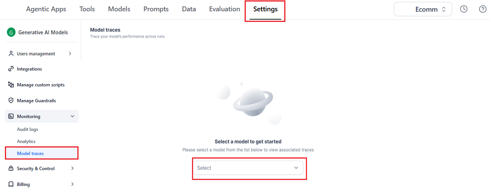
{kind=link}
The system loads the Model Traces feature with data for the last 30 days, which is the default time range selection.
If you have used the feature before, the data from your previous model selection is loaded for 30 days (the default selection).
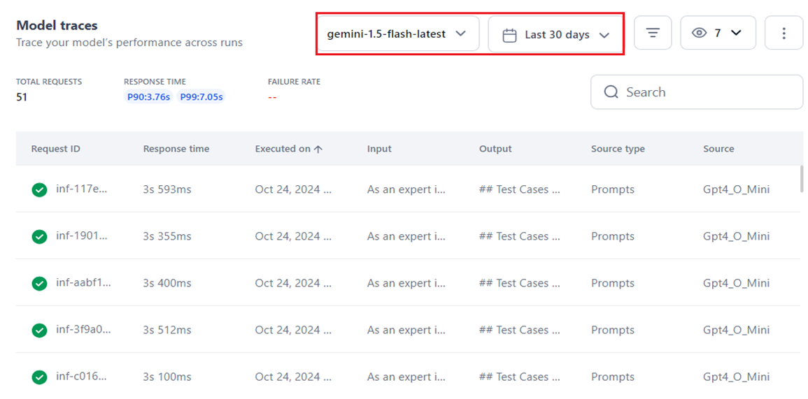
{kind=link}
Model Traces Information¶
Model Traces offers a centralized view of run-level insights for the selected model deployed in your account. It displays information across multiple deployments. For open-source and fine-tuned models, you can filter data by deployment name, while for external models, data is shown based on the connection name.
The key features for customizing the model traces data include:
-
Model Name Filter: Required for selecting and viewing information specific to the model you want to monitor.
-
For open-source and fine-tuned models, you can select from different deployment names, including the versions for the model.
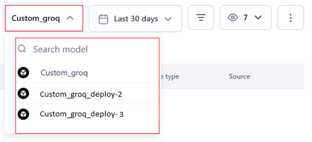
-
For commercial models, you can select the default connection linked to the model.
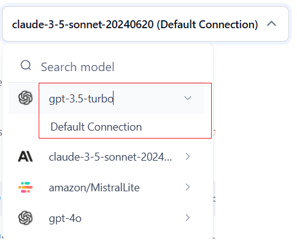
-
-
Time Selection Filter: Required to analyze model traces data for a specific time-frame in the past. Learn more.
- Filter By Option: An optional multi-field, multi-level filter for targeted analysis. Learn more.
- Visibility Filter: Add or remove columns from the UI to display only relevant data. To set the filter, click the Eye icon, enable the field to view its data, and disable it otherwise.
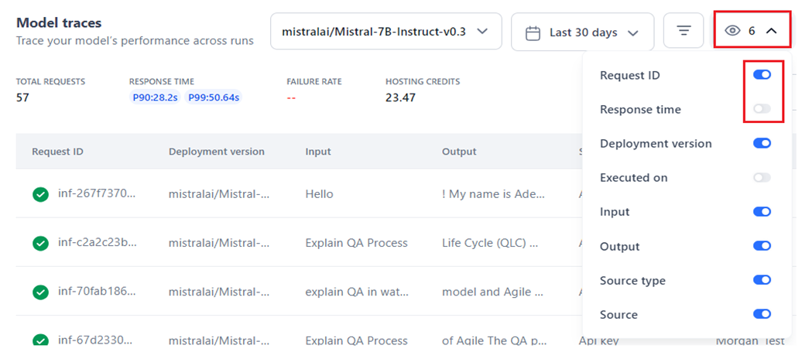
{kind=link}
{kind=link}
{kind=link}
Note
- By default, all the columns are visible in the table.
- You can adjust visibility for 8 columns in open-source and fine-tuned models and 7 columns for other model types.
- The Deployment Type filter is available only for open-source and fine-tuned models, not for external or custom API types.
- Export Data: Click Export to generate a CSV file of your model traces records based on the selected date range and filters. Note that all eight columns in the table are prepared and exported, irrespective of the applied visibility filter.
{kind=link}
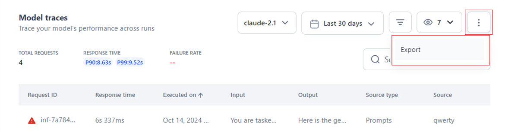
The progress status is displayed in the UI when preparing and exporting data.
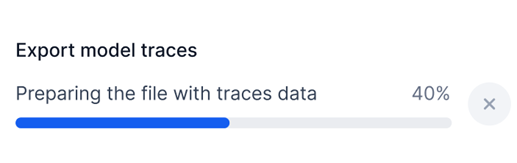
{kind=link}
Once the file is downloaded, the following message is displayed.
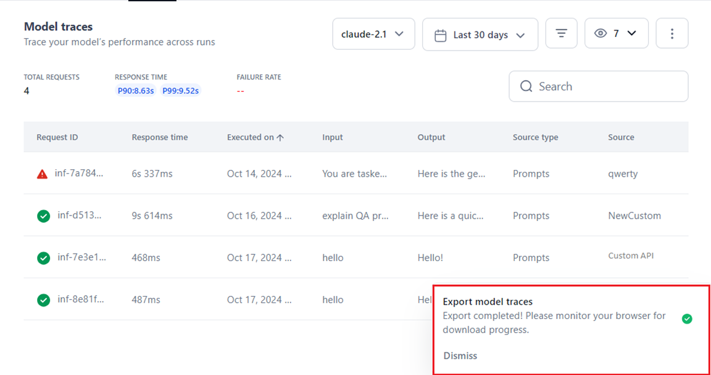
{kind=link}
If any error occurs during the export process, the following message is displayed:
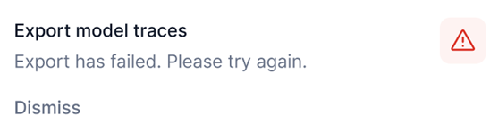
{kind=link}
Below is a sample of the export schema file. The file name is automatically saved in the format 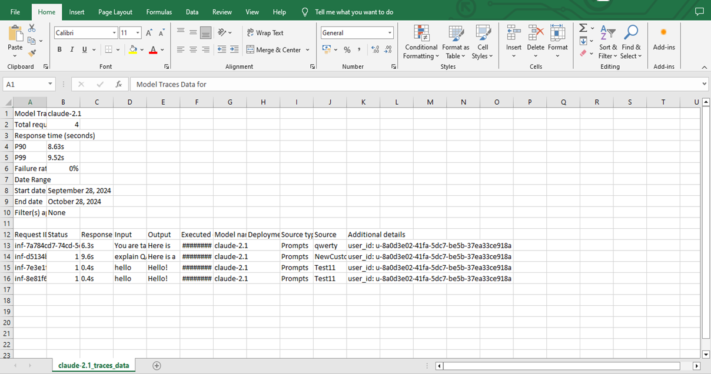modelname_traces_data, such as GPT4_traces_data.
{kind=link}
Key Considerations
- Each user’s export process is implemented separately, ensuring that one user's cancellations or adjustments do not interfere with another user’s export pipeline.
- Users can cancel an ongoing export operation, if required.
-
Search: You can locate specific model traces records on the UI by entering the run's Request ID in the Search textbox. The system returns matching results, as shown below.
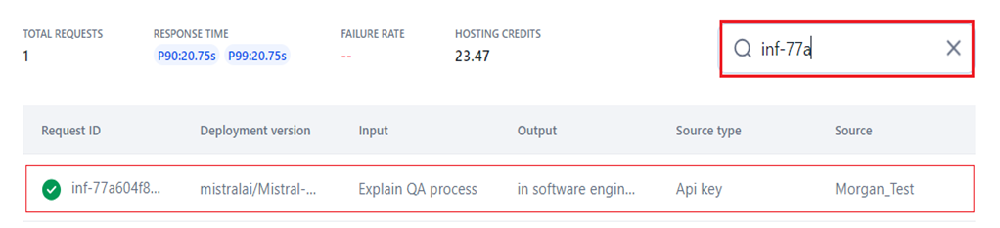
-
Model Performance Metrics Summary: Summarizes key metrics to help quickly analyze the model’s performance. Learn more.
- Model Traces: The table displays all runs executed by the model since its configuration, sorted by execution date from the latest to the oldest records. It includes data from the initial execution onward—whether deployed (for open-source and fine-tuned models) or integrated (for external models). The table includes the following metrics:
- Status: An icon indicating the success or failure of the run is displayed. See point 7 here.
- Request ID: The unique identifier used for the run record.
- Response Time: The time taken by the model to respond to a request.
- Deployment Version: The model version deployed in your account.
- Source Type: The source type that initiated the request.
- Source: The source name from where the request was initiated.
{kind=link}
Please refer to the table here for more information on the above metrics.
- Executed on: The run execution timestamp, with records displayed from latest to oldest by date.
- Input: Displays the input text provided for the run execution.
- Output: Displays the output text generated or response after the run.
To view the detailed trace information, click the required record.
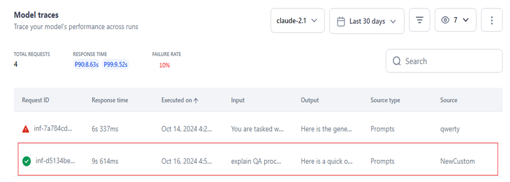
{kind=link}
Performance Metrics Summary¶
The UI summarizes key metrics for the selected period, offering actionable insights into the deployed model’s performance.
- Total Requests: The total number of requests/runs serviced by the model since its deployment in your account. The metric reflects an LLM model's processing speed and efficiency, helping identify performance issues and optimize responsiveness.
- Response Time: P90 and P99 response times show the thresholds below which 90% and 99% of responses fall, indicating model consistency. Lower values reflect reliable speed, while higher values suggest performance issues. For example,
- If a model's P90 is 100 seconds, it means that 99% of the requests are completed within 100 seconds.
- If a model's P99 is 100 seconds, it means that 99% of the requests are completed within 100 seconds.
- Failure Rate: Indicates the number of requests/runs that failed with an error code or were not serviced by the model out of the total requests sent since deployment. For example, if 5 requests failed out of 100, the failure rate displayed is 5%.
- Hosting Credits: Displays the credits consumed in your account by the deployed model based on its usage. Please see the pricing details here. This metric allows for a comparison of credit consumption against actual model usage.
Note
Hosting Credits apply only to the Platform’s open-source and fine-tuned models and are not displayed for external models.
{kind=link}
Time-based Filters¶
Use the time selection filter to view and monitor model traces across runs within a specific period. This allows you to focus on requests within a set time-frame to track changes or perform targeted debugging.
Note
- Last 30 Days is the default selection, which displays data for the past 30 days from the current date.
- Data is displayed only if requests/runs were executed by the selected model during the selected period.
Time selection is available for the past and current period, including the ones listed below:
- All Time: Displays the runs' data since the time the account was created.
- Today: Includes data generated on the current day.
- Today: Includes data generated on the current day.
- Yesterday: Includes data generated on the previous day.
- This Week: Displays data for all the days in the current week.
- This Month: Displays data for all the days in the current month.
- Last Month: Displays data for all the days in the previous month.
- Last 30 Days: Displays data for the past 30 days from the current date.
- Last 90 Days: Displays logs for the past 90 days from the current date.
- This Year: Displays logs for all the days in the current year.
- Last Year: Displays logs for all the days in the past year.
Steps to Set Time Range for Model Traces¶
- Navigate to the Model Traces feature.
-
Click the time selection button (displays Last 30 Days).
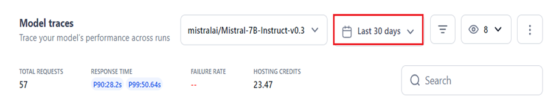
-
Select the required period on the left panel, or select a specific date, month, or year on the calendar widget (the current day is the default selection).
- Click Apply.
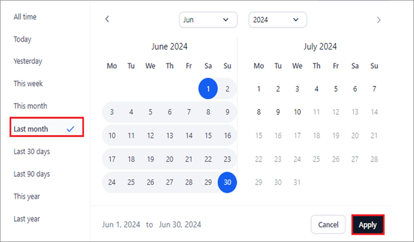
{kind=link}
{kind=link}
The relevant model traces' data is displayed for the selected period.
Filter Model Traces by Columns¶
You can narrow down the information displayed for model traces by applying custom column filters. This functionality is similar to Filter in the Audit Logs feature. Learn more.
These filters allow you to select specific column values, compare the chosen or entered values, and apply logical operators across columns for multi-level filtering, providing targeted, custom data on the UI.
Filter customization streamlines tracking and debugging of model runs at a detailed level, enhancing user experience.
Steps to Add a Custom Filter¶
- Navigate to the Model Traces feature.
- Click the Filter icon.
-
Click + Add Filter.
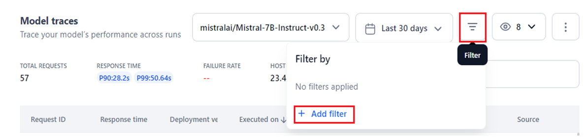
-
In the Filter By window, select the required option from the Select Column, Operator, and Value dropdown lists. For specific column filters, you must enter the value manually.
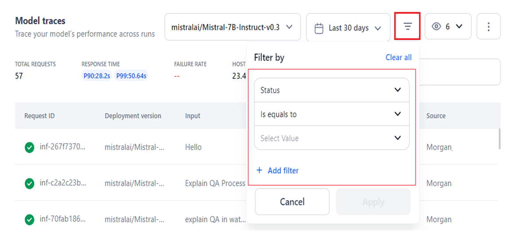
{kind=link}
{kind=link}
The table below summarizes the available columns along with their supported operators and values.
| Column Name | Description | Comparison Operator | Input Type for Value | Value Options |
| Status | Indicates the status of the model’s executed run. | Is Equals To | List Selection |
|
| Is Not Equals To | ||||
| Request ID | The unique ID associated with the model run/request. | Is Equals To | Enter manually | Any value |
| Is Not Equals To | ||||
| Contains | ||||
| Response Time | The response time of the model for the executed request. | Is Equals To | Enter manually | Enter the numeric values for minutes, seconds, and milliseconds in the m:s:ms format. |
| Is Not Equals To | ||||
| Is Greater Than | ||||
| Is Less Than | ||||
| Is Greater Than Equals To | ||||
| Is Less Than Equals To | ||||
| Deployment Version | The version of the model deployed for the specific run. | Is Equals To | Enter manually | Any value |
| Is Not Equals To | ||||
| Contains | ||||
| Source Type | The source type from which the run request was sent to the model. | Is Equals To | List Selection |
|
| Is Not Equals To | ||||
| Contains | ||||
| Source | The source from which the model received the run request. | Is Equals To | List Selection | Custom value(s) set by the user. |
| Is Not Equals To | ||||
| Contains |
- Click Apply.
{kind=link}
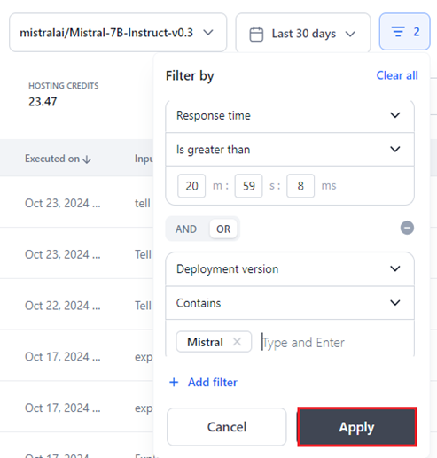
The UI displays all the relevant model traces' records that align with the applied filter(s). The number of filters you have applied is displayed on the Filter icon.
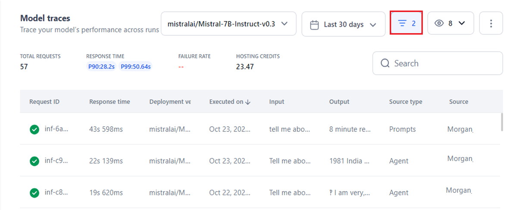
{kind=link}
To clear the filter settings, click Clear All.
{kind=link}
Add Multiple Filters¶
Adding multiple filter levels enhances model trace visibility on the UI. You can combine column, operator, and value filters using the AND/OR operators for targeted data, allowing you to focus on the model trace entries most relevant to your needs. Learn more.
Important
- AND/OR operators cannot be combined in multiple filtering steps to set filter criteria, ensuring consistent operator usage for each filtering step.
- Using the AND operator ensures that all specified conditions must be met for an entry to be included in the results.
- On the other hand, using the OR operator broadens the criteria, allowing entries that meet any of the specified conditions to be included. These operators provide flexibility in tailoring your model traces data.
- Click the Delete icon to delete a filter criteria step.
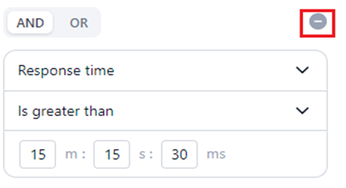
{kind=link}
Steps to Add Multiple Filters¶
- Follow Steps 1 to 3 mentioned here.
-
Select the AND/OR operator tab in the Filter by window.
-
Follow Steps 4 to 5 mentioned here.
{kind=link}
The matched model traces entries are displayed in the UI.
Traces: Input, Output and Metadata¶
Clicking on a run/request record on the UI opens the detailed Traces window displaying the Request ID and the following information:
Input and Output Panels¶
- The Input panel displays the request (text) provided to the model using input tokens to execute the request.
- The Output panel displays the text output or response generated by the model using output tokens after the run execution.
Key Considerations
- Plain text is the default display format.
-
Enabling JSON mode allows you to access the JSON view of the input in the editor. This view provides the complete response/request payload sent to the model, including additional keys and details not visible in plain text format.
Note
The model name shown in the code editor includes the deployment version for open-source and fine-tuned models, and the connection name for externally hosted models.
-
The text and JSON code cannot be modified in the editor.
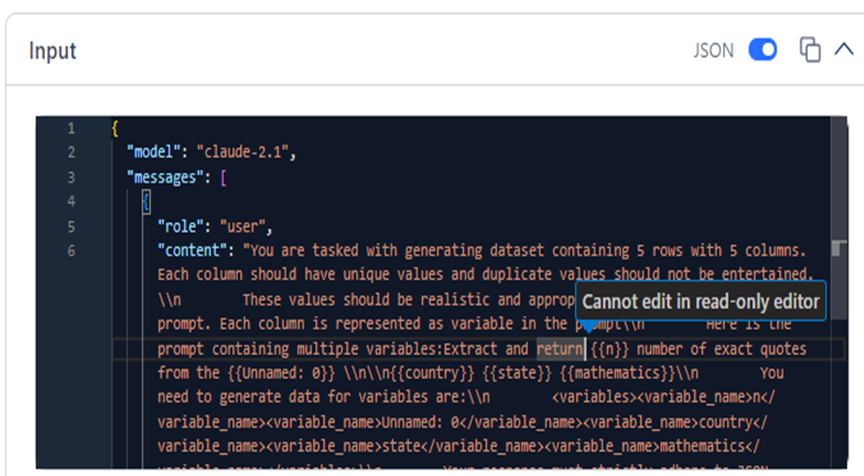
-
Click the Copy icon to copy the text or code and paste it into your preferred editor for debugging or troubleshooting.
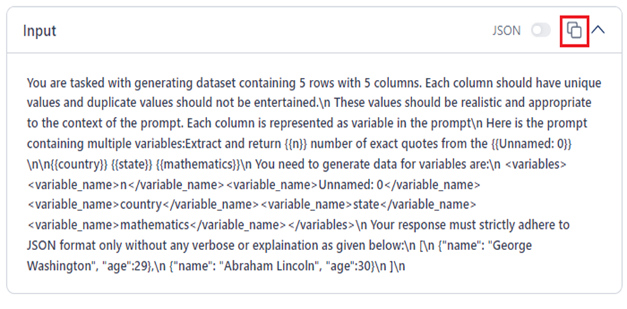
-
The key metadata related to the processed request is shown in a separate panel, discussed in the next section.
{kind=link}
{kind=link}
Metadata Panel¶
The following model run metadata helps analyze the model’s performance.
For Fine-tuned and Open-source Models
- Request ID: Unique identifier for the specific model request.
- Base model: The Platform-hosted or imported model that executes the request.
- Deployment name: The deployment name of the model.
- Deployment version: Version of the model deployed for the run.
- Streaming: Streams the model’s response token by token in real time.
- Response time: Time taken by the model to generate a response.
- Input tokens: Number of tokens in the request input.
- Output tokens: Number of tokens in the model’s response.
- Executed on: Date and time when the run was executed.
- Source type: Type of source that sent the request.
- Source: Specific origin of the request.
-
User ID: Identifier for the user who initiated the request.
{kind=link}
For External models
In addition to the above metadata (excluding Deployment name and Deployment version), the following information is displayed:
-
Connection name: The deployed connection name for the model.
{kind=link}
Model Traces empowers users to identify time-based trends, troubleshoot issues, and make informed decisions by offering detailed and targeted insights into run-based metrics. This capability ensures that organizations uphold high efficiency, reliability, and compliance standards in their model deployments.
Related Resources
- Settings Console - Learn more about other Platform admin features.
- Monitoring: Model Analytics Dashboard - Get actionable insights into model-specific metrics and optimize performance.
- Monitoring: Audit Logs - Track activities and events in your account.
- Billing - Manage resource consumption for tools, set limits, and track usage trends.